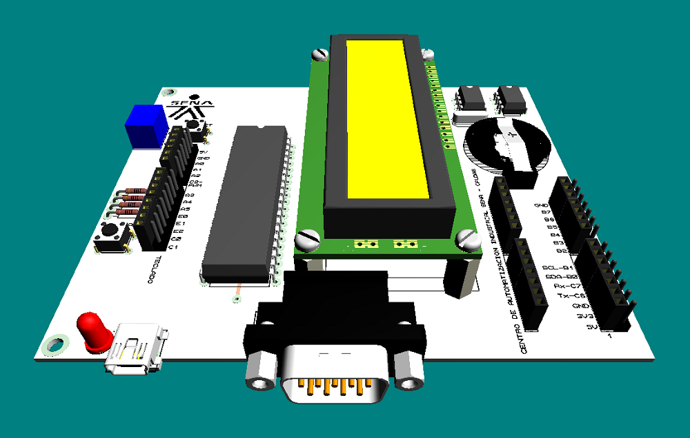
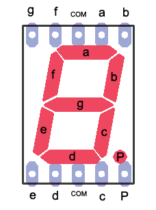
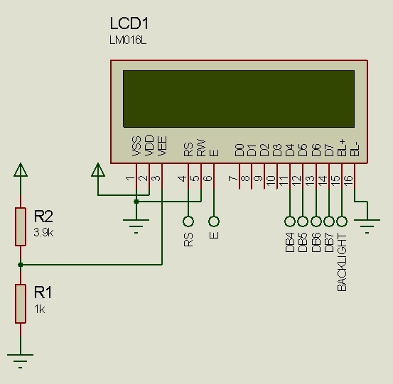
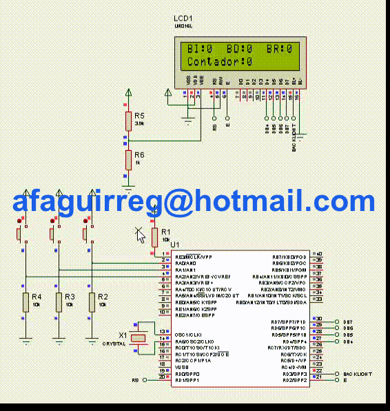
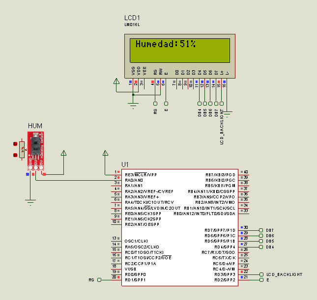
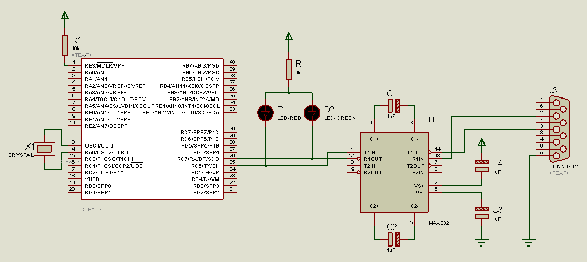
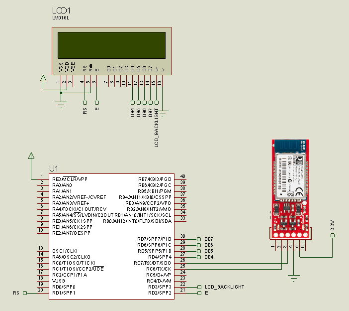
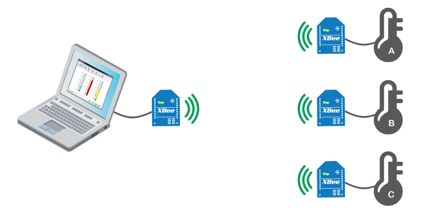

Configuraciones: PULL_DOWN - PULL_UP
Interfaz de salida transistor BJT
Control motor paso a paso unipolar
Control motor paso a paso bipolar
Interfaz de salida optotransistor
Interfaz de salida transistor MOSFET
Arranque estrella-triángulo motor AC
Interfaz de entrada transistor BJT
Interfaz de entrada optotransistor
Visualización
Display 7 segmentos

LCD2x16
La pantalla LCD es otro dispositivo de despliegue de información muy versatil y viene en una gran cantidad de modelos y configuraciones. Sirven como ventana a datos, configuraciones o despliegue de información donde un LED no es suficiente.
Los Display LCD son visualizadores pasivos, esto significa que no emiten luz como el visualizador o display alfanumérico hecho a base de un arreglo de diodos LED.
Es por esa razón que, algunas veces, cuando intentamos ver la hora en un reloj que utiliza esta tecnología, es necesario una fuente de luz adicional. El Display LCD tiene muy bajo consumo de energía si se lo compara con el display o visualizador alfanumérico y son compatibles con la tecnología CMOS, característica que permite que se utilice en equipos portátiles (ejemplo: los relojes de pulsera, calculadoras, etc.). Tiene una vida aproximada de 50,000 horas. Hay diferentes tipos de presentaciones y son muy fáciles de configurar.
¿Cómo funciona un Display LCD?
El LCD modifica la luz que lo incide. Dependiendo de la polarización que se esté aplicando, el LCD reflejará o absorberá más o menos luz. Cuando un segmento recibe la tensión de polarización adecuada no reflejará la luz y aparecerá en la pantalla del dispositivo como un segmento oscuro. Seguro que más de un lector habrá visto este fenómeno en calculadoras, relojes, etc.
El líquido de un display LCD está entre dos placas de vidrio paralelas con una separación de unos micrones. Estas placas de vidrio tienen unos electrodos especiales que definen, con su forma, los símbolos, caracteres, etc. que se visualizarán. La superficie del vidrio que hace contacto con el líquido es tratada de manera que induzca la alineación de los cristales en dirección paralela a las placas. Esta alineación permite el paso de la luz incidente sin ninguna alteración. Cuando se aplica la polarización adecuada entre los electrodos, aparece un campo eléctrico entre estos electrodos (campo que es perpendicular a las placas) y esto causa que las moléculas del líquido se agrupen en sentido paralelo a este (el campo eléctrico) y cause que aparezca una zona oscura sobre un fondo claro (contraste positivo). De esta manera aparece la información que se desea mostrar.
Se puede introducir color en los visualizadores LCD de las siguientes maneras: - Polarizadores selectivos de color. Estos producen segmentos de color sobre un fondo brillante o segmentos brillantes sobre un fondo de color. - Filtros de color. Pueden ser una lámina o estar impresos en el visualizador. Estos filtros trabajan mejor con iluminación trasera. - Luz trasera de color Cuando los segmentos no han sido energizados, aparecen oscuros, pero cuando se energizan permiten el paso de la luz de color.
Lo primero que debemos saber, es la conexión de la pantalla LCD según el tipo que vamos a usar y para esto consultaremos el “LCDpc1602h” (Hoja información) de una pantalla LCD genérica 2x16 es decir 2 filas de 16 caracteres cada una.
Las pantallas LCD son dispositivos que se puede dañar muy fácilmente, actualmente se encuentran varios modelos: 1X30, 4X16, 2X16 y de led, en vez de cristal líquido y todas trabajan de forma similar.

Al dorso de la pantalla veremos que los pines están numerados.

Dorso Pantalla LCD
En este modelo en particular de pantalla LCD, solo se marca el PIN 1 y el 16.
Identificar los pines no es gran problema, ahora debemos saber cómo conectarlos, para eso vamos a ver el siguiente diagrama.
Diagrama de la pantalla LCD |

Podemos dividir el diagrama en dos partes como se ve en la figura, la parte de "control y despliegue" (izquierda) y la parte de "alimentación y ajuste" (derecha).

El diagrama Power Supply (alimentación y ajuste) VSS sería el neutro (polaridad -) y VDD de +3.3V a +5V (según el modelo de la LCD), entre ellos una resistencia ajustable (potenciómetro) a V0 que nos servirá para ajustar el contraste de la pantalla.
El LED BKL (LED BACKLIGHT) lo podemos tomar como un circuito independiente, su función es de retroiluminar la pantalla, es decir, es para poder ver los dígitos en la oscuridad, A y K no por casualidad se comportan en cierto modo como un led normal, pero este tiene mayor consumo, se alimenta directamente a +4.5V o a +5V.
No es obligatorio conectar el (LED BACKLIGHT) para que funcione la LCD, como comentamos antes es un circuito independiente, lo interesante es que podemos usar un interruptor normal o uno mediante un circuito de conmutación (transistores o MOSFET) controlado por el mismo PIC para que solo cuando halla actividad (por ejemplo) este encendido (ya que este tiene un consumo considerable).
Para lo demás pines tenemos a continuación la descripción que nos da una hoja de datos de un fabricante ya que no hay mucho problema en lo que de conexión se trata.
|
Descripción de los pines y su función |
Manos a la obra!!!
En PIC-C CCS agregamos la librería #include <flex_lcd.c> que hace una función similar a la de un driver en una PC, pero esta vez entre el PIC y la LCD.
Para conocer como se debe conectar el LCD, abriremos la librería “flex_lcd.c”

Descripción de conexiones del LCD

En las primeras líneas podemos ver que se definen los pines del microcontrolador a los cuales irán conectados los pines del LCD, y serán éstos los que usaremos para diseñar nuestro circuito en Proteus ISIS.
En el circuito seleccionamos un PIC18F4550 y un LM016L (pantalla LCD 2x16), como en ejercicios anteriores algunas conexiones no se hacen por simplificar, pero eso no indica que, cuando vamos hacerlo en un Proto-Board no debamos hacerlas. (ej: conexión del pin V0 – contraste del LCD).
Hay que recordar configurar el reloj 20MHz (en la simulación), también colocar en alto el pin 1 del PIC (MCLR).
Comentarios:
Extraído parcialmente de: http://22xd.blogspot.com/2011/04/programando-pic-con-ccs-ejercicio-3-lcd.html

LCD Grafico (GLCD)
Interrupción externa INT
Una interrupción es un evento que hace que el microcontrolador deje de ejecutar la tarea que está realizando para atender dicho acontecimiento y luego regrese y continúe la tarea que estaba realizando antes de que se presentara la interrupción. El pic 16F628 (y el 16F628A) tiene 10 fuentes de interrupción, si las interrupciones están habilitadas cada vez que una de estos acontecimientos se presente el pic dejará de ejecutar el programa para ir a atender la interrupción y al término de la misma continuará ejecutando el programa donde lo había dejado.
Las fuentes de interrupción son:
Interrupción externa RB0/INT
Interrupción por cambio lógico en el puerto B (pines RB7 a RB4)
Interrupción por desborde del timer 0 (TMR0)
Interrupción por desborde del timer 1 (TMR1)
Interrupción por comparación exitosa exitosa en TMR2
Interrupción del comparador
Interrupción del transmisor del USART
Interrupción del receptor del USART
Interrupción del módulo CCP
Interrupción del EEPROM
Aunque el pic cuenta con 10 fuentes distintas de interrupción solamente tiene un vector de interrupción por lo que si se habilitan varias interrupciones al momento de presentarse cualquiera de ellas el programa saltara a la misma rutina de interrupción y es responsabilidad del programador crear una rutina que identifique la fuente de la interrupción.
Timer
6.2 Timer on LCD
El teclado matricial 4x4, son los más utilizados en el desarrollo de proyectos con microcontroladores PIC y tienen su aplicación en el ingreso de datos de forma manual por parte del usuario, en aquellos casos en que el empleo de pulsadores simples no es lo más apropiado, ya sea por la presentación final del producto o por la restricción del número de líneas de entrada de los microcontroladores PIC.
El teclado matricial 4x4 está constituido por una matriz de pulsadores dispuestos en filas (A,B,C,D) y columnas (1,2,3,4), con la intención de reducir el número de pines necesarios para su conexión. Las 16 teclas necesitan sólo 8 pines del microcontrolador, en lugar de los 16 pines que se requerirían para la conexión de 16 teclas independientes.


A cada tecla le corresponde una posición única en la matriz.
Su funcionamiento es muy sencillo, cuando se presiona una tecla, se conectan internamente la fila y columna correspondientes; por ejemplo, al presionar la tecla “6” se conectan la fila B y la columna 3. Si no hay ninguna tecla presionada, las filas están desconectadas de las columnas.

Para facilitar la lectura del teclado matricial usaremos la librería kbd_matricial.c que se encarga de gestionar las líneas físicas (pines del microcontrolador) y contiene la función kbd_getc() que se encuentra implementada en ella.
La variable tecla es de tipo char, permitiendo almacenar en ella un caracter alfanumérico, el cual obtiene al llamar la función kbd_getc().
La función kbd_getc() devuelve caracter ASCII que corresponde a la tecla pulsada o cero (0) si no se ha pulsado ninguna tecla o el
Extraído parcialmente de:
http://www.programarpicenc.com/libro/cap08-teclado-matricial-4x4-microcontroladores-pic.html


EEPROM
5.1 EEPROM 7-Seg_0-99
Los sentidos del ser humano perciben al mundo de forma analógica, tal como es el mundo. Por ejemplo, el ser humano puede diferenciar, en el espectro de la luz, entre el negro y el blanco una infinidad de colores, de forma contraria a lo que sería una respuesta digital, negro o blanco, incluso si el hombre percibiera los colores en escalas de grises ésta ya sería una respuesta analógica. Teniendo en cuenta que la mayoría de las veces nos interesará medir variables físicas que pueden percibir los humanos, necesitaremos unos dispositivos electrónicos especiales para poder medir esas cantidades, esos dispositivos son los sensores.
Típica señal analógica:
La conversión Analógica a Digital que es capaz de hacer un PIC consiste en convertir un valor de tensión (voltaje) que conectemos a un PIN habilitado para ello, en un valor numérico proporcional a dicha tensión que podemos guardar en una variable y ser utilizado por nuestro programa del PIC.
Dicho de otra forma: Si entre un pin del PIC podemos tener una tensión, con respecto a GND, entre 0V y 5V y realizamos una conversión Analógico-Digital de ese pin con una precisión de 8 bits entonces el PIC puede "leer" esa tensión en 256 (2^8=256) valores distintos que nos devuelve como resultado de la lectura, siendo el 0 el correspondiente a los 0V y el 255 el correspondiente a los 5V, y todos los intermedios en "saltos" de 0,019V (5V/256).
Si en lugar de 8 bits estamos utilizando un PIC que tiene un conversor A/D de 10 bits de precisión entonces ese mismo rango de 0V a 5V podemos "leerlo" en 1024 (2^10=1024) valores distintos, siendo el "resultado" 0 el que corresponde a los 0V y el 1023 a los 5V. Cualquier valor intermedio nos devolverá un número equivalente con "pasos" de 0,0049V por valor.
Hemos visto que el mínimo que podemos convertir es 0V o tensión del nivel del Vss (GND) del PIC y 5V o tensión del nivel de alimentación Vcc del PIC.
Esto es así si no utilizamos los Voltajes de Referencia, porque si los utilizamos entonces las cosas pueden cambiar....
Imaginemos un dispositivo analógico que varía su tensión de salida entre 0V y 1V. Si le aplicamos la conversión A/D como antes con 8 bits de precisión entonces los valores que vamos a obtener son entre 0 y 51 (1*256/5V) con lo que desperdiciamos una parte muy importante del rango posible de conversión, entre 52 y 255 nunca nos va a aparecer como resultado de la misma.
Entonces el truco está en poner a 1V la patilla VRef+ del PIC con lo que la conversión A/D a realizar en lo que haya presente en nuestro pin a leer se va a efectuar en 256 pasos entre GND y VRef+, no entre GND y Vcc como antes, con lo que obtenemos un resultado 5 veces más preciso: 1V dividido en 256 partes con lo que cada número corresponde con 0,0039V.
Ahora, imaginemos que nuestro dispositivo analógico varía su tensión de salida entre 1V y 2V. Si utilizamos el primer ejemplo que vimos, conversión A/D entre 0V y 5V con 8 bits de precisión, entonces solo obtendremos números entre 51 y 102, perdiendo todos los valores inferiores y superiores a éstos.
Si utilizamos el ejemplo anterior a éste pero colocando el VRef+ a 2V entonces tendremos valores entre 128 y 255 pero ninguno inferior a 128 ya que nuestra tensión analógica no baja de 1V ....
Así que la solución está en utilizar otra patilla del PIC, en este caso para VRef-, o sea para ponerle la referencia de tensión mínima a partir de la cual vamos a convertir valores, que junto con la VRef+ tenemos el margen o rango de tensiones a convertir a gusto.
En este segundo ejemplo pondríamos VRef- a 1V y VRef+ a 2V con lo que tendríamos una conversión de 8 bits en la que el 0 correspondería a los 1V y el 255 a los 2V ...
Todo esto se puede ver en el siguiente diagrama de bloques del conversor A/D de los PIC's de la familia 16F87X:

Sensor de humedad: 0% - 100%

Sensor de distancia infrarojo: 0.0mm - 10.0mm

Sensor de distancia inductivo: 0.0mm - 20.0mm

Salida análoga PWM
Muchas veces nos gustaría controlar la cantidad física de una acción: qué tan brillantes son las luces, qué tan rápido se mueve un motor, cuantos grados girar, etc. En este caso estaremos hablando de salidas de tipo analógico, con este tipo de salidas podemos tener un grado de control sobre la salida, donde el resultado no solo se limitará a On-Off.
Como la mayoría de los microcontroladores no pueden generar un voltaje (real) variable en sus pines de salida, una de las soluciones para resolver esta carencia es utilizar un truco electrónico que se basa en la modulación del ancho del pulso (PWM para abreviar).

Como se puede observar en la figura, el voltaje promedio es el resultado de alternar el valor de salida de un pin entre 0 y 5 voltios con un ancho de pulso variable, durante un periodo de tiempo determinado.
Como la mayoría de los microcontroladores no pueden generar un voltaje (real) variable en sus pines de salida, una de las soluciones para resolver esta carencia es utilizar un truco electrónico que se basa en la modulación del ancho del pulso – Pulse Width Modulation - (PWM para abreviar).
La conversión digital a analógico que es capaz de hacer un PIC consiste en convertir un valor discreto en el ciclo de trabajo del PWM proporcional al valor de tensión (voltaje) que deseamos producir en un PIN habilitado para ello.
Dicho de otra forma: En un pin del PIC podemos tener una tensión, con respecto a GND, entre 0V y 5V obtenida de la tensión promedio generada por el ciclo de trabajo del PWM. Entonces el PIC puede "escribir" esa tensión en 100 valores distintos, siendo el 0 el correspondiente a los 0V y el 100 el correspondiente a los 5V, y todos los intermedios en "saltos" de 0,05 (5V/100).

8.1 Timer & Speed
Comunicación serial asíncrona (UART)








Comunicación I2C
I²C es un bus de comunicaciones en serie. Su nombre viene de Inter-Integrated Circuit (Circuitos Inter-Integrados). La versión 1.0 data del año 1992 y la versión 2.1 del año 2000, su diseñador es Philips. La velocidad es de 100Kbits por segundo en el modo estándar, aunque también permite velocidades de 3.4 Mbit/s. Es un bus muy usado en la industria, principalmente para comunicar microntroladores y sus periféricos en sistemas integrados (Embedded Systems) y generalizando más para comunicar circuitos integrados entre si que normalmente residen en un mismo circuito impreso.
La principal característica de I²C es que utiliza dos líneas para transmitir la información: una para los datos y por otra la señal de reloj. También es necesaria una tercera línea, pero esta sólo es la referencia (masa). Como suelen comunicarse circuitos en una misma placa que comparten una misma masa esta tercera línea no suele ser necesaria.
Las líneas se llaman:
SDA: datos
SCL: reloj
GND: tierra
Las dos primeras líneas son drenador abierto, por lo que necesitan resistencias de pull-up.
Los dispositivos conectados al bus I²C tienen una dirección única para cada uno. También pueden ser maestros o esclavos. El dispositivo maestro inicia la transferencia de datos y además genera la señal de reloj, pero no es necesario que el maestro sea siempre el mismo dispositivo, esta característica se la pueden ir pasando los dispositivos que tengan esa capacidad. Esta característica hace que al bus I²C se le denomine bus multimaestro.
Las transacciones en el bus I2C tienen este formato:
| start | A7 A6 A5 A4 A3 A2 A1 | R/W | ACK | ... DATA ... | ACK | stop | idle |
- El bus esta libre cuando SDA y SCL están en estado lógico alto.
- En estado bus libre, cualquier dispositivo puede ocupar el bus I²C como maestro.
- El maestro comienza la comunicación enviando un patrón llamado "start condition". Esto alerta a los dispositivos esclavos, poniéndolos a la espera de una transacción.
- El maestro se dirige al dispositivo con el que quiere hablar, enviando un byte que contiene los siete bits (A7-A1) que componen la dirección del dispositivo esclavo con el que se quiere comunicar, y el octavo bit (A0) de menor peso se corresponde con la operación deseada (L/E), lectura=1 (recibir del esclavo) y escritura=0 (enviar al esclavo).
- La dirección enviada es comparada por cada esclavo del bus con su propia dirección, si ambas coinciden, el esclavo se considera direccionado como esclavo-transmisor o esclavo receptor dependiendo del bit R/W.
- El esclavo responde enviando un bit de ACK que le indica al dispositivo maestro que el esclavo reconoce la solicitud y está en condiciones de comunicarse.
- Seguidamente comienza el intercambio de información entre los dispositivos.
- El maestro envía la dirección del registro interno del dispositivo que se desea leer o escribir.
- El esclavo responde con otro bit de ACK
- Ahora el maestro puede empezar a leer o escribir bytes de datos. Todos los bytes de datos deben constar de 8 bits, el número máximo de bytes que pueden ser enviados en una transmisión no está restringido, siendo el esclavo quien fija esta cantidad de acuerdo a sus características.
- Cada byte leído/escrito por el maestro debe ser obligatoriamente reconocido por un bit de ACK por el dispositivo maestro/esclavo.
- Se repiten los 2 pasos anteriores hasta finalizar la comunicación entre maestro y esclavo.
- Aun cuando el maestro siempre controla el estado de la línea del reloj, un esclavo de baja velocidad o que deba detener la transferencia de datos mientras efectúa otra función, puede forzar la línea SCL a nivel bajo. Esto hace que el maestro entre en un estado de espera, durante el cual, no transmite información esperando a que el esclavo esté listo para continuar la transferencia en el punto donde había sido detenida.
- Cuando la comunicación finaliza, el maestro transmite una "stop condition" para dejar libre el bus.
- Después de la "stop condition", es obligatorio para el bus estar idle durante unos
microsegundos.
El código del kernel de Linux para el soporte I2C está separado en varias piezas lógicas:
- I2C chip driver (maneja uno de los chips conectados al bus I2C, tanto si se comporta como maestro o como esclavo)
- I2C bus driver
- I2C algorithm driver
- I2C core (la parte genérica del subsistema de I2C)
*extraído de http://es.wikipedia.org/wiki/I%C2%B2C


USB
Control con microcontrolador
Proyectos